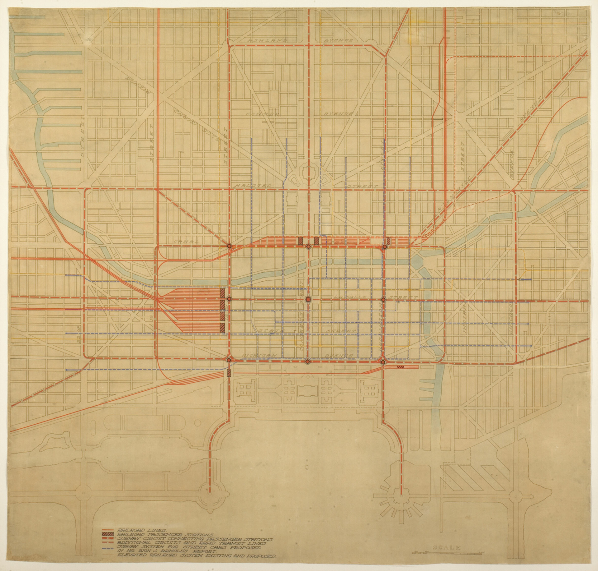
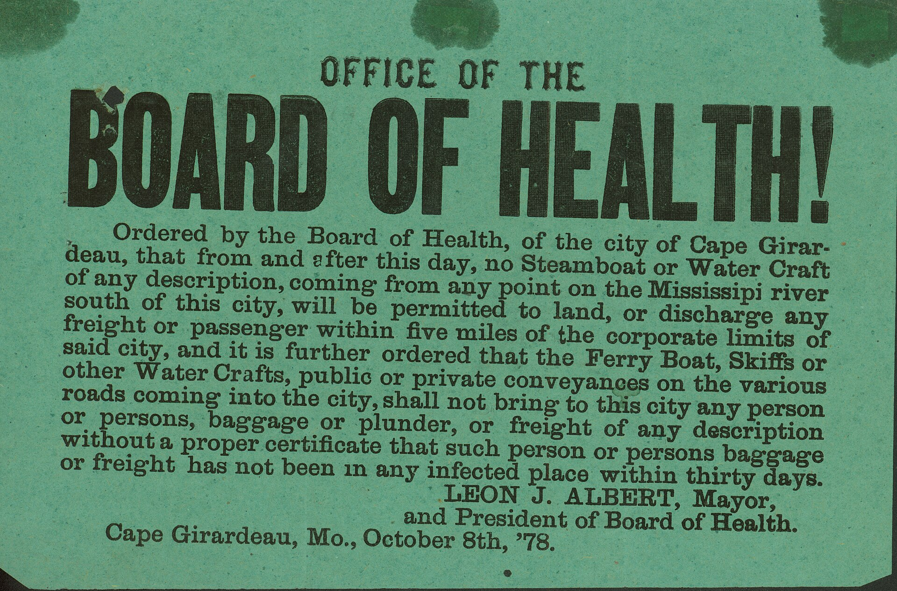
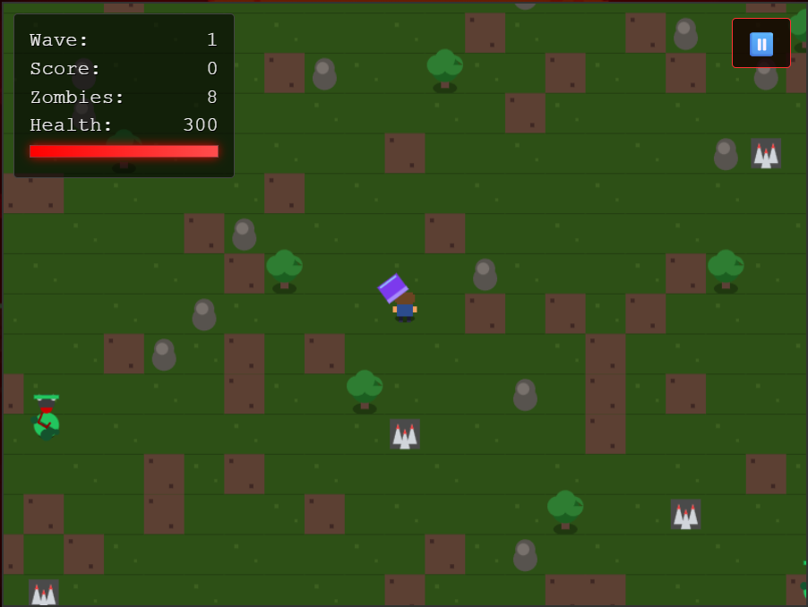
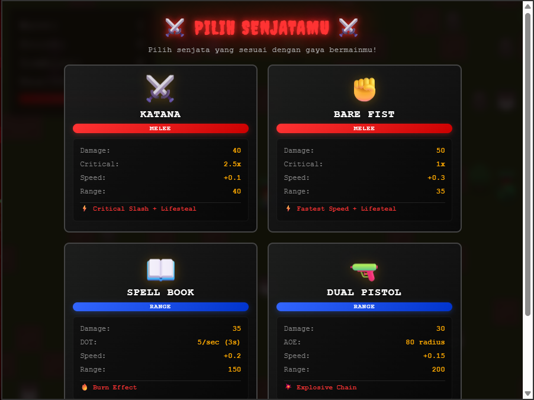
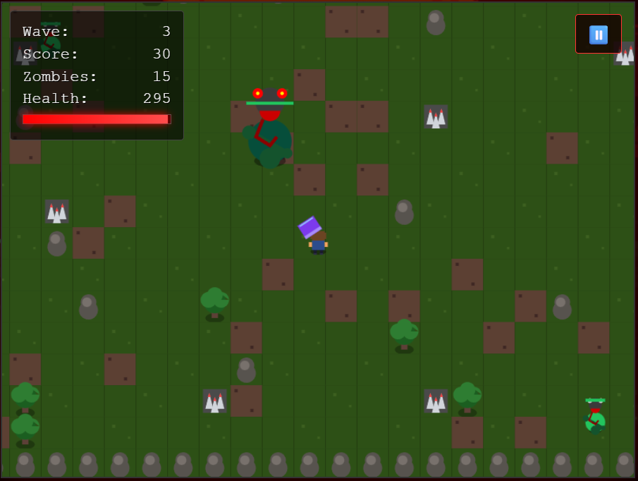

HUNTY ZOMBIE
Bertahan hidup dari gelombang mutasi zombie tanpa henti di Sektor Karantina-04 dalam pertempuran arena retro 2D.
Persenjataan Pemburu
Setiap senjata memiliki karakteristik jarak, pengali kritis, dan efek khusus untuk gaya bertahan hidup yang berbeda. Uji simulasi serangannya secara langsung.
Katana
Senjata tajam jarak dekat untuk manuver cepat membelah formasi zombie.Klasifikasi Ancaman
Peta musuh di area karantina mencakup zombie infeksi standar hingga mutasi boss raksasa berkekuatan stun.
Boss Zombie (Merah)
Spesimen raksasa dengan resistensi tinggi. Menimbulkan efek stun melumpuhkan bila berhasil memukul pemburu 4 kali beruntun.
Zombie Biasa (Hijau)
Populasi terinfeksi tahap awal. Bergerak berombongan dengan kecepatan bertahap dan daya tahan meningkat di tiap wave.
- HP Dasar: 85 HP
- Kecepatan: 0.9 baseline
- Taktik: Tebas lifesteal atau tembakan area
Rintangan & Duri Lingkungan
Medan pertempuran dipenuhi batu, pepohonan tebal, dan tile duri berduri yang membatasi mobilitas pelarian pemburu.
- Tile Duri: Mengurangi mobilitas bila terinjak
- Pohon & Batu: Penyekat fisik pemisah kawanan
- Taktik: Giring zombie mengitari rintangan
Protokol Bertahan Hidup
Panduan kontrol fisik untuk unit tempur keyboard-mouse di desktop dan layar sentuh di perangkat bergerak.
Kontrol Desktop
- W, A, S, D Manuver gerak omnidirectional menghindar dari kepungan.
- KURSOR Mengarahkan poros senjata dan orientasi pandangan hadap.
- KLIK KIRI Mengeksekusi tebasan melee atau menembakkan proyektil ranged.
- ESC Menjeda jalannya simulasi untuk meninjau status operasi.
Kontrol Sentuh Mobile
- JOYSTICK Virtual thumbpad dinamis di area kiri bawah layar untuk navigasi lincah.
- ATTACK BTN Tombol serang berlabel di kanan bawah untuk mengunci target terdekat.
- AUTO AIM Sistem membidik otomatis sasaran zombie paling kritis dalam jangkauan.
- PAUSE BTN Tombol jeda di sudut kanan atas aman dari safe-area inset.

Perencanaan Sektor Karantina
Rencana tata letak zona terbuka karantina disusun dalam matriks grid taktikal. Setiap zona memiliki choke-point terencana untuk memecah gerombolan musuh yang masuk dari perimeter luar.
Arsip Lapangan Karantina
Catatan autentik insiden penyebaran wabah dan instruksi evakuasi bertahan hidup bagi para pemburu garis depan.

Latar Belakang: Dunia telah jatuh ke dalam kekacauan. Virus misterius telah mengubah sebagian besar populasi menjadi zombie yang haus darah. Kamu adalah salah satu dari sedikit penyintas yang masih bertahan di tengah apocalypse ini.
Misi Pertahanan: Bertahan hidup selama mungkin dan eliminasi sebanyak mungkin zombie. Setiap zombie yang kamu kalahkan menambah skor dan membawamu lebih dekat untuk bertahan hidup di zona merah.
Sasaran Operasi: Bertahan melewati gelombang zombie yang semakin kuat. Kalahkan Boss Zombie yang muncul setiap wave ke-3. Raih skor setinggi-tingginya dan buktikan dirimu sebagai pemburu terhebat.
Sistem Gelombang (Wave): Wave 1-2: Zombie biasa dengan kecepatan dan damage sedang. Wave 3, 6, 9...: Boss Zombie muncul dengan ukuran besar, pukulan berat, dan efek STUN setelah 4 pukulan beruntun. Wave 4+: Intensitas kecepatan musuh meningkat tajam.
Taktik Lapangan: Manfaatkan lifesteal dari senjata melee untuk memulihkan health bar. Gunakan obstacle batu dan pepohonan sebagai peredam serbuan massa. Jaga jarak aman saat menghadapi Boss untuk mencegah status stun melumpuhkanmu.
Rekaman Lapangan
Tangkapan visual langsung dari operasi pertempuran pemburu, pemilihan arsenal, dan pertempuran boss.



Unit Pengembang
Tim pengembang di balik pengembangan mesin permainan, sistem tempur, dan tata suara Hunty Zombie.
Dibuat dengan dedikasi untuk eksplorasi grafika komputer dan pengembangan game web 2D interaktif. Tetap waspada dan terus bertahan hidup.